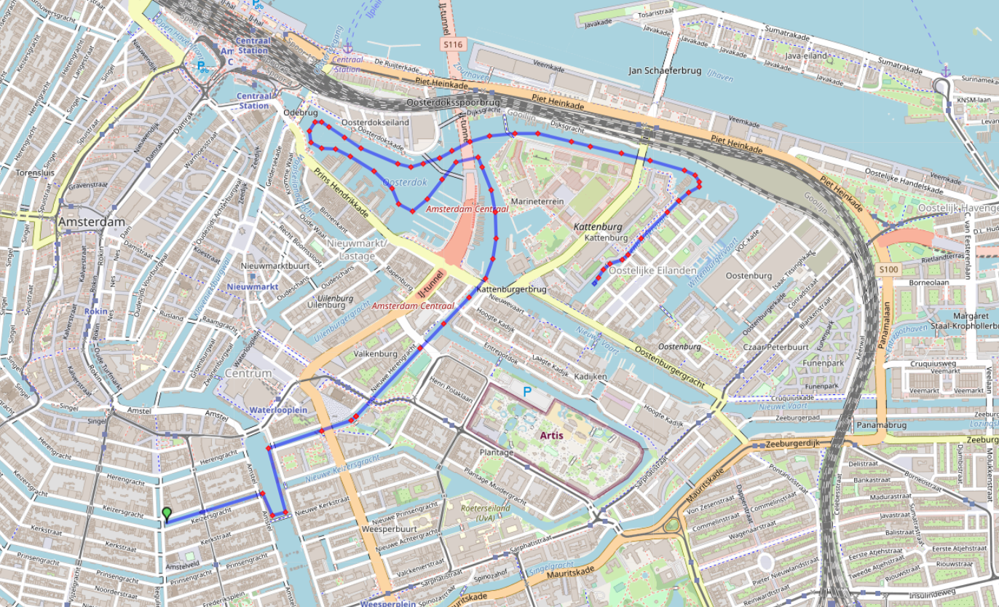
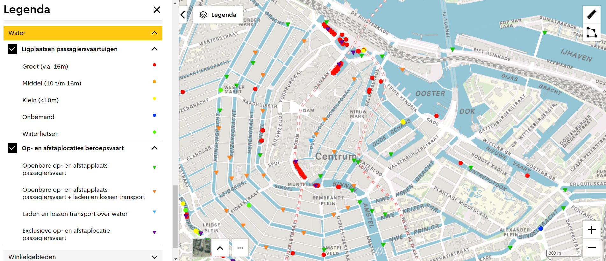
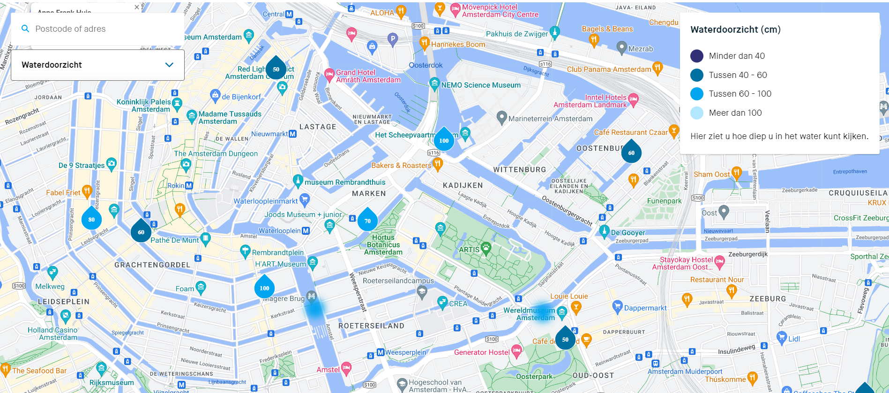
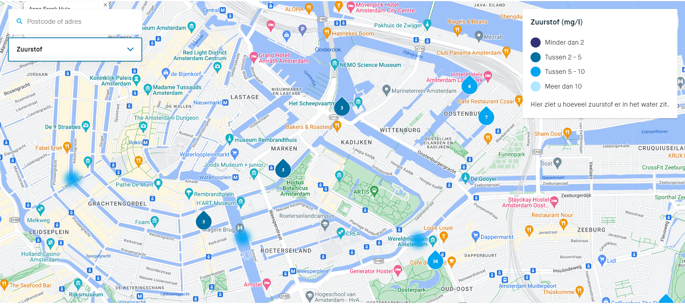

Instructions Assignment 1
For assignment 1 we had to find a location for the swimming route. However, there were a few conditions bound to finding the right location. The event can not have an impact on commercial water transport and it would be appreciated if the event also has a small impact on the routes of the canal boats. So, we have to find a route which has good quality swimming conditions for the participants to keep their health steady and keep it minial so it will not interrupt the boat routes. Below are a few datasets to advice the Municipality of Amsterdam for the best swimming route. We believe that these datasets support the fact that our swimming route is the best option.
Route Paralympic Test event Amsterdam File PNG
In this file, you can find the proposed route for the Paralympic test event that the municipality of Amsterdam wants to host. The beginning of the route is identical to the route of the Amsterdam City Swim. As Waternet guarantees the water quality for the ACS, we know that the water quality in this part of the course is good enough for the Paralympic test event. The part of the course would lead the swimmers around the Nemo pier into the Oosterdok area. In here the swimmers will do a loop, leaving the area again through the section above Nemo. From there the route goes into the Dijksgracht and underneath the Marinesbrug. After the Marinesbrug the swimmers will take a left into the Kattenburgervaart, where at the end of the route is.
Boats File PNG
The boats png file shows that on our route there are only two public boarding locations. With this we can assume that the swimming route has a small impact on the route of canal boats. This is a geospatial dataset collected from the website of the municipality of Amsterdam. The data is geometrically represented with points.
Turbidity File PNG
The Turbidity File shows the turbidity, the view distance underwater, of the waters of Amsterdam. As can be seen in the figure, the view distance on the proposed route of the test event has good turbidity compared to other parts in the city of Amsterdam, at the start of the route in the Keizersgracht the view distance is 100 cm. In the second part of the route through the Nieuwe Herengracht, the view distance drops slightly but stays relatively high at 70 cm. The waters around the Marineterrein, where the route makes a lap and eventually finishes the view distance goes up again to 100 cm.
Oxygen Levels File PNG
The Oxygen Levels File shows the oxygen levels within the waters of Amsterdam. Compared to the rest of Amsterdam the oxygen levels on the route of the test event are towards the lower side. At all the measure points of the Waternet that are on the oxygen level is 3 mg/l.
Damaged quay walls around route PNG / Damaged quay walls cluster Herengracht Amstel
In the Damaged quay walls around route file shows where along the proposed route of the test event there are damaged quay walls. As can be seen in the picture there is a cluster of 2 damaged quay walls close to the route on the junction of the Herengracht and the Amstel. In the Damaged quay walls cluster Herengracht Amstel file, it can be seen that only one of those two is actually on the route and on the junction of the Herengracht and the Amstel. The other damaged quay wall is further along the Herengracht, away from the route of the test event. Furthermore, there is a second damaged quay wall along the route on the Nieuwe Herengracht. After this second damaged quay wall, the route of the test event does not have anymore damaged quay walls.


Comments
We recommend to use these datasets for the test event, but also take samples in April on certain points of the swimming routes and send it to "Het Waterlaboratorium" to ensure that the swimming route has an acceptable water quality.
We further recommend the organisation of the test event to discuss with the municipality to have the damaged quay walls repaired well ahead of the test event. This way the risk of quay wall collapse along the route or the risk of pollution of the repairs of the quay walls are minimized.
Home Next